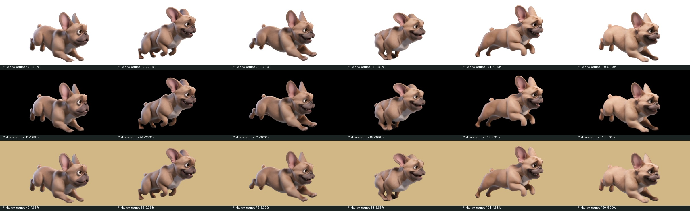
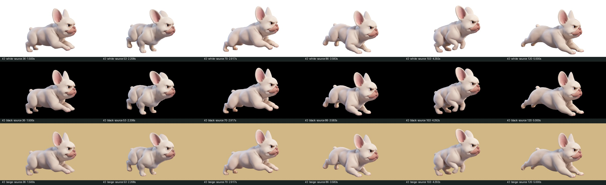
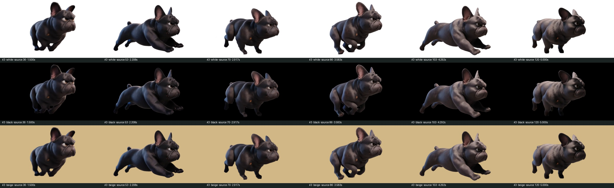
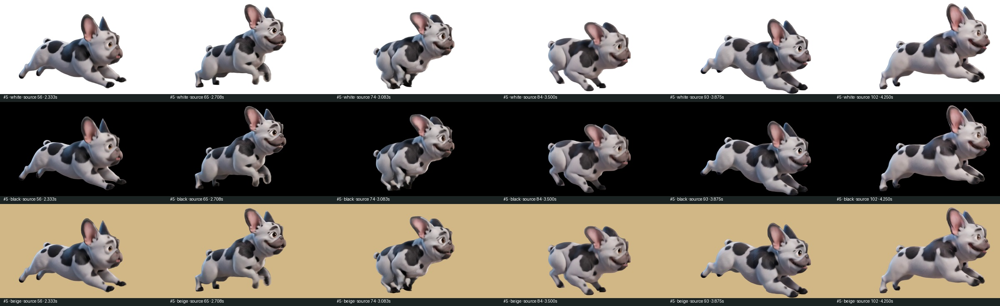

Четыре отдельные собаки после удаления фона. Видео №4, трасса и production не затронуты; ролики не зациклены.
Исходные кадры 40–120, 1276×720, 24 fps.
Скачать WebM с alpha Кадры проверки

Исходные кадры 36–120, 1276×720, 24 fps.


Исходные кадры 56–102, 1276×720, 24 fps.

Технический отчёт